O QUE É AUTOMOBILISMO?
O automobilismo é um esporte que envolve a competição de carros em diversas modalidades, como corridas de circuito, ralis e provas de resistência. É um esporte muito popular em todo o mundo, com milhões de fãs que acompanham as corridas ao vivo ou pela televisão.
As competições de automobilismo geralmente são divididas em categorias, de acordo com as especificações dos carros utilizados e as regras da competição. Alguns exemplos de categorias populares incluem a Fórmula 1, a NASCAR, o Campeonato Mundial de Endurance e o Campeonato Mundial de Rali.
Os pilotos de automobilismo são altamente habilidosos e treinados para dirigir em alta velocidade, com precisão e controle. Eles enfrentam desafios como curvas fechadas, mudanças de superfície e condições climáticas variáveis durante as corridas. Além disso, as equipes de automobilismo trabalham incansavelmente para projetar, desenvolver e ajustar os carros para obter o melhor desempenho possível na pista.
O automobilismo é um esporte emocionante e desafiador, que envolve uma combinação de habilidade, tecnologia e estratégia. Os fãs são atraídos pelas corridas emocionantes, rivalidades intensas e a busca constante pela vitória e pelo pódio. É um esporte que continua a evoluir e crescer, com novas tecnologias e desafios sempre surgindo para os pilotos e equipes.
O QUE É MOTOVELOCIDADE?
As competições de moto são uma categoria do esporte motorizado que envolve corridas de motocicletas em diversas modalidades. Essas competições são populares em todo o mundo, com milhões de fãs que acompanham as corridas ao vivo ou pela televisão.
As competições de moto são geralmente divididas em categorias, de acordo com as especificações das motos utilizadas e as regras da competição. Alguns exemplos de categorias populares incluem o MotoGP, o Superbike World Championship, o Motocross e o Supercross.
Os pilotos de moto são altamente habilidosos e treinados para pilotar em alta velocidade, com precisão e controle. Eles enfrentam desafios como curvas fechadas, saltos e obstáculos durante as corridas. Além disso, as equipes de moto trabalham incansavelmente para projetar, desenvolver e ajustar as motos para obter o melhor desempenho possível na pista.
O MotoGP é a categoria mais popular de competição de moto, que envolve corridas em circuitos fechados com motos de alta performance. O Superbike World Championship é outra categoria popular, com motos menos potentes, mas igualmente emocionantes de se assistir. O Motocross e Supercross, por outro lado, são competições off-road, que envolvem saltos e manobras radicais em terrenos variados.
O MotoGP é a categoria mais popular de competição de moto, que envolve corridas em circuitos fechados com motos de alta performance. O Superbike World Championship é outra categoria popular, com motos menos potentes, mas igualmente emocionantes de se assistir. O Motocross e Supercross, por outro lado, são competições off-road, que envolvem saltos e manobras radicais em terrenos variados.O esporte de competição de moto é emocionante e desafiador, envolvendo uma combinação de habilidade, tecnologia e estratégia. Os fãs são atraídos pelas corridas emocionantes, rivalidades intensas e a busca constante pela vitória e pelo pódio. É um esporte que continua a evoluir e crescer, com novas tecnologias e desafios sempre surgindo para os pilotos e equipes.
Vamos falar sobre alguns carros históricos do automobilismo!
Audi Quattro
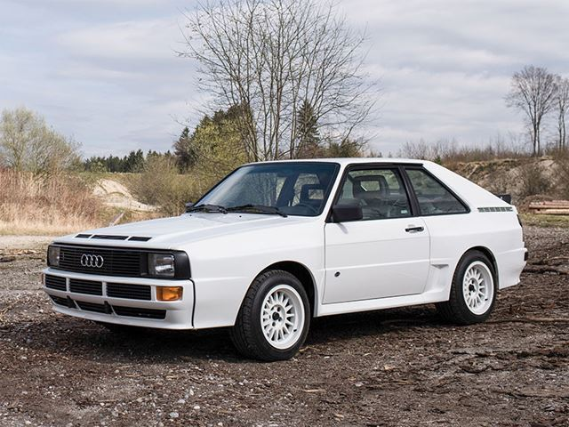
O Audi Quattro é um icônico carro esportivo produzido pela montadora alemã Audi, que teve sua produção entre os anos de 1980 e 1991. O veículo foi concebido com o objetivo de ser uma máquina de alto desempenho para competições de rali, e acabou se tornando uma lenda no mundo automobilístico.
O Audi Quattro foi o primeiro carro de rali a utilizar a tração nas quatro rodas, o que lhe conferia maior estabilidade e controle em curvas e terrenos acidentados. Seu motor turbo de cinco cilindros também era uma inovação, e garantia uma potência impressionante de mais de 300 cavalos.
Com essas características, o Audi Quattro foi um verdadeiro sucesso nas competições de rali, vencendo diversos campeonatos mundiais e se tornando uma referência em termos de desempenho e tecnologia. Além disso, o carro também ganhou popularidade entre os entusiastas de esportivos, que apreciavam sua aparência robusta e agressiva.
Hoje em dia, o Audi Quattro é considerado um clássico do automobilismo, e é altamente valorizado por colecionadores e fãs de carros antigos. Ainda é possível encontrar alguns exemplares em bom estado de conservação, e mesmo após décadas de sua produção, o modelo continua sendo admirado por sua história e desempenho inovador.
Clique aqui para ver a disponibilidade de compra de um Audi Quattro no Brasil!
Nissan Skyline GTR R34

O Nissan Skyline GTR R34 é um modelo de carro esportivo produzido pela fabricante japonesa Nissan entre 1999 e 2002. É um carro icônico da cultura automotiva, conhecido por sua aparência agressiva e desempenho excepcional nas pistas e nas ruas.
O Skyline GTR R34 é alimentado por um motor RB26DETT, um motor de seis cilindros em linha com dois turbocompressores que produzem cerca de 280 cavalos de potência. O carro também apresenta tração nas quatro rodas, tornando-o excepcionalmente ágil e estável em altas velocidades.
O design do Skyline GTR R34 é marcado por seu aerofólio traseiro, grade frontal característica, faróis com formato agressivo e linhas aerodinâmicas que aumentam a aderência do carro em alta velocidade. O interior do carro é espartano, com bancos de corrida e um painel de instrumentos que fornece ao motorista todas as informações necessárias para controlar o carro.
O Skyline GTR R34 é um carro altamente valorizado pelos entusiastas de automóveis e colecionadores. Sua produção foi limitada, tornando-o um item de colecionador raro e procurado. O carro também ganhou notoriedade internacional após sua aparição no filme "Velozes e Furiosos 2", ajudando a popularizar o modelo em todo o mundo.
Embora tenha sido descontinuado em 2002, o Nissan Skyline GTR R34 continua sendo um ícone na cultura automotiva e é lembrado como um dos melhores carros esportivos já produzidos pela Nissan. Seu desempenho excepcional e design agressivo o tornam um objeto de desejo para muitos fãs de carros em todo o mundo.
Clique aqui para ver a disponibilidade de compra de um Nissan Skyline GTR R34 no Brasil!
Toyota Supra MK4

O Toyota Supra MK4 é um lendário carro esportivo japonês que foi produzido entre 1993 e 2002. Foi um dos carros mais icônicos da década de 90 e ainda é muito procurado pelos entusiastas de carros até hoje.
Com seu estilo agressivo e aerodinâmico, o Supra MK4 é conhecido por seu desempenho impressionante. Equipado com um motor 2JZ-GTE de seis cilindros em linha, capaz de produzir mais de 320 cavalos de potência, o Supra MK4 era capaz de acelerar de 0 a 100 km/h em pouco mais de 4 segundos e atingir uma velocidade máxima de mais de 250 km/h.
O Supra MK4 também se destacou por sua manobrabilidade e controle excepcionais, tornando-o um carro muito divertido de dirigir em estradas sinuosas. O carro foi lançado em várias versões, incluindo o modelo base, o modelo Turbo e a edição especial RZ.
Embora tenha sido descontinuado em 2002, o Supra MK4 mantém um grande seguimento de fãs e ainda é um dos carros esportivos japoneses mais populares de todos os tempos. Além disso, a Toyota recentemente lançou uma nova geração do Supra, que se inspira no modelo MK4 original, mantendo a tradição e a emoção do lendário carro japonês vivo para as gerações futuras.
Clique aqui para ver a disponibilidade de compra de um Toyota Supra MK4 no Brasil!
Ford GT40

O Ford GT40 é um ícone do automobilismo, especialmente por sua incrível história nas corridas de Le Mans. Esse carro foi criado na década de 1960 pela Ford com o objetivo de competir nas corridas de endurance, que exigiam carros que fossem capazes de suportar 24 horas de corrida sem parar.
O nome "GT40" vem do fato de que o carro tinha uma altura de apenas 40 polegadas, cerca de um metro de altura. Além disso, o número "GT" fazia referência à sigla de "Gran Turismo", um termo usado para designar carros esportivos de alto desempenho.
A história do GT40 nas 24 Horas de Le Mans é lendária. Após algumas tentativas fracassadas em 1964 e 1965, a Ford finalmente conseguiu vencer a corrida em 1966, com uma dobradinha histórica nas primeiras duas posições. Eles também venceram as corridas de 1967, 1968 e 1969, estabelecendo uma incrível sequência de vitórias.
O GT40 era alimentado por um motor V8 de 7 litros que produzia cerca de 500 cavalos de potência. Isso o tornava extremamente rápido, capaz de atingir velocidades de mais de 320 km/h nas retas de Le Mans. O carro também tinha um design aerodinâmico inovador, que ajudava a aumentar a velocidade nas retas e a melhorar a estabilidade nas curvas.
Hoje em dia, o GT40 é considerado um carro clássico, e as versões originais são extremamente raras e valiosas. No entanto, a Ford lançou uma nova versão do GT em 2005, que foi produzida até 2006. Esse carro era uma homenagem ao GT40 original e apresentava um design moderno e muita potência, com um motor V8 de 5,4 litros que produzia 550 cavalos de potência.
Clique aqui para ver a disponibilidade de compra de um Ford GT40 no Brasil!
BMW M5 V10
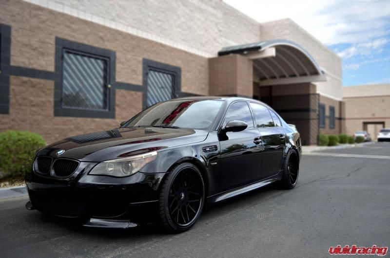
O BMW M5 V10 é um sedã esportivo fabricado pela montadora alemã BMW, que foi produzido em duas gerações, sendo a primeira entre 2005 e 2010 e a segunda de 2011 a 2016. O modelo foi introduzido para competir com outras marcas de alto desempenho, como Audi RS6, Mercedes E63 AMG e Jaguar XFR.
O BMW M5 V10 é equipado com um motor V10 de 5,0 litros capaz de produzir 507 cavalos de potência a 7.750 rpm, o que o torna um dos carros de produção mais potentes de sua época. O motor é acoplado a uma transmissão de seis velocidades manual ou uma transmissão sequencial SMG de sete velocidades.
O M5 V10 tem uma velocidade máxima limitada eletronicamente de 250 km/h e acelera de 0 a 100 km/h em apenas 4,7 segundos. Ele também apresenta uma suspensão esportiva ajustável e freios a disco ventilados e perfurados nas quatro rodas, garantindo uma excelente dirigibilidade e desempenho nas curvas.
A primeira geração do BMW M5 V10 foi fabricada de 2005 a 2010 e apresentava uma carroceria elegante e agressiva, com linhas aerodinâmicas e faróis de xenônio. A segunda geração, produzida de 2011 a 2016, apresentava um design mais agressivo, com um capô mais longo e linhas mais musculosas.
O interior do M5 V10 é luxuoso e espaçoso, com acabamentos de alta qualidade e tecnologia avançada, como um sistema de navegação GPS, um sistema de som premium e bancos esportivos em couro. O carro também apresenta uma ampla gama de opções de personalização, permitindo que os proprietários escolham entre várias cores, acabamentos e recursos adicionais.
Em resumo, o BMW M5 V10 é um carro esportivo de alto desempenho, com um motor potente, excelente dirigibilidade e um design atraente. Ele oferece uma experiência de condução emocionante e satisfatória, e é considerado por muitos entusiastas de carros como um dos melhores sedãs esportivos já fabricados pela BMW.
Clique aqui para ver a disponibilidade de compra de uma BMW M5 V10 no Brasil!
Fusca

O Fusca, também conhecido como Volkswagen Beetle, é um dos carros mais icônicos da história do automóvel. Lançado em 1938 na Alemanha, o Fusca foi projetado por Ferdinand Porsche e se tornou um sucesso mundial, sendo produzido em diversos países ao longo das décadas.
O Fusca foi criado com a ideia de ser um carro simples, resistente e acessível ao público em geral. O motor traseiro refrigerado a ar e a carroceria arredondada se tornaram marcas registradas do modelo. Ao longo dos anos, o Fusca passou por diversas atualizações e modificações, mas sua essência sempre foi preservada.
No Brasil, o Fusca ganhou um lugar especial no coração dos brasileiros. Produzido pela Volkswagen em São Bernardo do Campo (SP) desde 1959, o Fusca se tornou um ícone da cultura popular brasileira. O carro era utilizado em diversas atividades, como transporte de carga, táxi e até mesmo em competições automobilísticas.
O Fusca foi um carro extremamente versátil e adaptável, tendo sido utilizado em diversos segmentos. Além de suas funções mais conhecidas, como transporte e competições, o Fusca também se tornou um carro de colecionador, com modelos raros e personalizados sendo bastante valorizados no mercado.
Após mais de 60 anos de produção, o Fusca foi descontinuado pela Volkswagen em 2003, deixando um legado de simplicidade, resistência e carisma. Ainda hoje, o Fusca é visto como um carro emblemático e um verdadeiro clássico da indústria automobilística mundial.
Clique aqui para ver a disponibilidade de compra de um Fusca no Brasil!
Ferrari F40

A Ferrari F40 é um dos carros esportivos mais icônicos já produzidos. Lançado em 1987, ele foi criado para comemorar o 40º aniversário da Ferrari e para ser o sucessor do lendário 288 GTO.
Projetado pelo famoso estúdio de design Pininfarina, a F40 foi inspirada em carros de corrida e apresentava um chassi tubular de fibra de carbono e alumínio, além de uma carroceria de fibra de vidro. Com um motor V8 de 2,9 litros twin-turbo, ele produzia impressionantes 478 cavalos de potência e podia chegar a uma velocidade máxima de 324 km/h.
A F40 também foi uma das primeiras Ferraris a apresentar freios a disco ventilados e pinças de freio de quatro pistões, o que ajudou a torná-lo um carro de alta performance ainda mais seguro.
No total, foram produzidas apenas 1.311 unidades da F40, tornando-o um dos carros Ferrari mais raros já feitos. Hoje em dia, ele é altamente valorizado por colecionadores e entusiastas de carros esportivos, e continua sendo um ícone da história automotiva italiana.
Clique aqui para ver a disponibilidade de compra de uma Ferrari F40 no Brasil!
Tesla Model S Plaid

O Tesla Model S Plaid é o modelo de alta performance da marca americana de veículos elétricos, Tesla. Apresentado em junho de 2021, o Model S Plaid foi projetado para oferecer uma experiência de direção sem igual, com desempenho extremamente rápido e tecnologia avançada.
Com três motores elétricos, o Model S Plaid é capaz de acelerar de 0 a 100 km/h em menos de 2 segundos, o que o torna o carro elétrico mais rápido em produção no mundo. Além disso, ele possui uma autonomia de mais de 600 quilômetros com uma única carga de bateria.
O interior do Model S Plaid é luxuoso e futurista, com uma tela de 17 polegadas no painel que controla todas as funções do carro, incluindo o sistema de som de alta qualidade e a navegação. Ele também possui uma tecnologia de condução autônoma, que permite ao carro se mover por conta própria em algumas situações.
Embora seja um carro elétrico, o Model S Plaid não perde em nada para os carros esportivos movidos a gasolina em termos de desempenho. Ele é um exemplo do futuro da indústria automotiva, com tecnologia de ponta e sustentabilidade ambiental. Sem dúvida, o Tesla Model S Plaid é um carro revolucionário e um marco na história dos carros elétricos de alto desempenho.
Clique aqui para ver a disponibilidade de compra de um Tesla Model S Plaid no Brasil!
Nissan Silvia S15
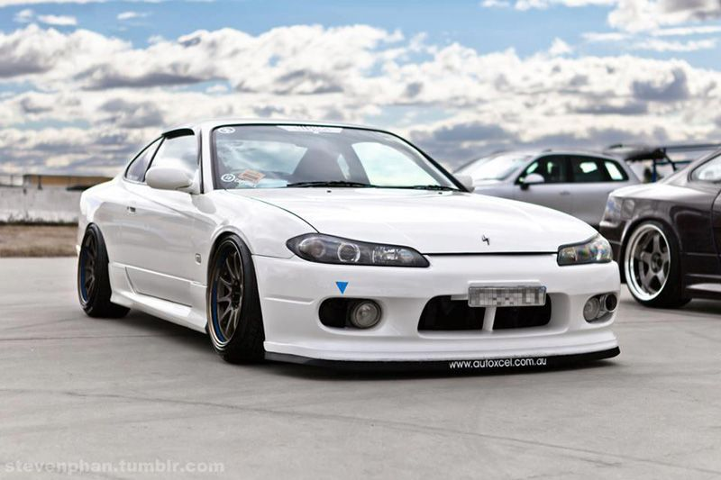
O Nissan Silvia S15 é um carro esportivo japonês que conquistou muitos fãs ao redor do mundo. Fabricado entre 1999 e 2002, é a quinta geração do modelo Silvia e é conhecido por suas características aerodinâmicas e desempenho excepcional.
Equipado com um motor turbocharged SR20DET de 2.0 litros, o Silvia S15 foi projetado para oferecer uma experiência de direção emocionante. Com sua suspensão ajustável e chassi rígido, ele se tornou um favorito entre os entusiastas de carros esportivos e tuning.
Além de sua potência, o Silvia S15 também é conhecido por seu design atraente. Com linhas aerodinâmicas e uma frente agressiva, é um carro que chama a atenção nas ruas. A versão Spec-R do S15 apresenta um spoiler traseiro elevado e rodas de liga leve de 17 polegadas, adicionando ainda mais personalidade ao visual do carro.
Embora o Nissan Silvia S15 tenha sido produzido apenas por um curto período de tempo, ele deixou uma marca duradoura na comunidade de carros esportivos. É um exemplo notável da engenharia japonesa e um carro que continua a inspirar os entusiastas de automóveis em todo o mundo.
Clique aqui para ver a disponibilidade de compra de um Nissan Silvia S15 no Brasil!
Honda Civic Type R
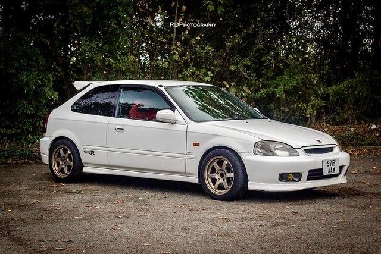
O Honda Civic Type R é um veículo hatchback esportivo de alta performance fabricado pela Honda desde 1997. Originalmente disponível apenas no mercado japonês, o Civic Type R se tornou uma sensação global e atualmente é comercializado em vários países em todo o mundo.
Com um motor turbocharged de quatro cilindros e 2.0 litros, o Civic Type R é capaz de produzir uma potência de até 306 cavalos de potência e 400 Nm de torque. Essa potência é transmitida às rodas dianteiras por meio de uma transmissão manual de seis velocidades. O veículo possui uma suspensão ajustável, um diferencial de deslizamento limitado e freios de alto desempenho, tornando-o uma verdadeira máquina de corrida.
O Civic Type R é conhecido por sua aparência agressiva e estilo aerodinâmico, incluindo um grande aerofólio traseiro e um body kit que aumenta a aderência do veículo em alta velocidade. O interior é igualmente impressionante, com assentos esportivos e um volante de couro envolvente, proporcionando ao motorista uma experiência de direção única e envolvente.
Além de suas características de desempenho, o Civic Type R também é conhecido por sua confiabilidade e durabilidade. A Honda tem uma reputação de construir veículos que duram muito tempo, e o Civic Type R não é exceção. Muitos proprietários relatam que seus veículos permanecem confiáveis e sem problemas por muitos anos após a compra.
Em resumo, o Honda Civic Type R é um veículo hatchback esportivo de alta performance que oferece excelente desempenho, estilo agressivo e durabilidade confiável. Com sua combinação única de desempenho e confiabilidade, o Civic Type R é um dos mais populares veículos esportivos em todo o mundo.
Clique aqui para ver a disponibilidade de compra de um Honda Civic Type R no Brasil!
Para mais informações sobre cada carro clique em sua respectiva foto!
Vamos falar agora sobre algumas motos históricas!
Para mais informações sobre cada moto clique em sua respectiva foto!
Yamaha RD 350
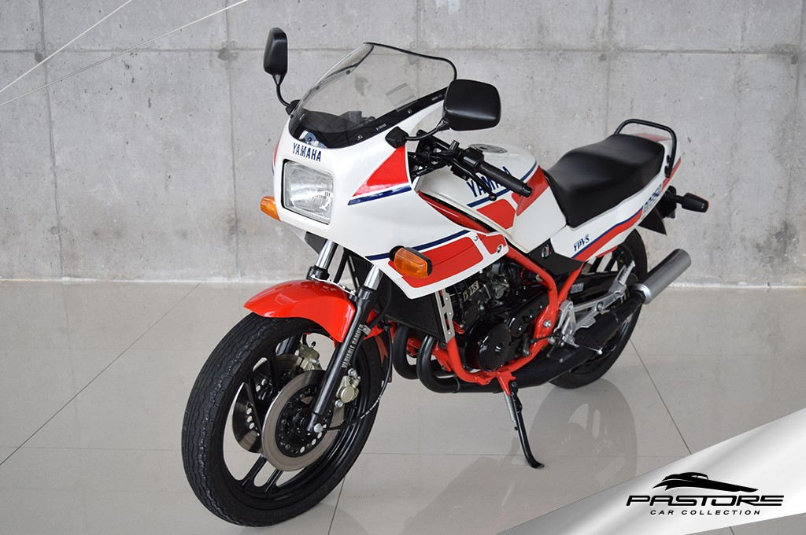
A Yamaha RD 350 foi uma motocicleta fabricada pela Yamaha entre 1973 e 1995. Ela é considerada um ícone das motocicletas esportivas dos anos 70 e 80 no Brasil, com seu motor dois tempos de alta performance e seu design agressivo.
O motor de 350cc da RD 350 era capaz de produzir uma potência de 39 cv a 7.500 rpm, um número impressionante para a época. O motor dois tempos da RD 350 também produzia um som característico e inconfundível, que a tornava facilmente reconhecível nas ruas.
Além da performance do motor, a RD 350 também era conhecida por seu design arrojado. Seus faróis retangulares e sua carenagem agressiva a tornavam uma moto imponente e moderna para a época. O chassi em dupla trave de aço era robusto e contribuía para a estabilidade e segurança da motocicleta em altas velocidades.
No entanto, a Yamaha RD 350 também era conhecida por ser uma moto difícil de pilotar, especialmente para pilotos inexperientes. Sua potência e aceleração rápida exigiam um certo nível de habilidade e técnica para pilotar com segurança. Por isso, a RD 350 ganhou uma reputação de ser uma moto perigosa e sua produção foi descontinuada em 1995.
Apesar disso, a Yamaha RD 350 deixou um legado importante no mundo das motocicletas esportivas e é lembrada até hoje por sua performance, design e impacto cultural.
Clique aqui para ver a disponibilidade de compra de uma Yamaha RD 350 no Brasil!
Kawasaki Ninja H2R
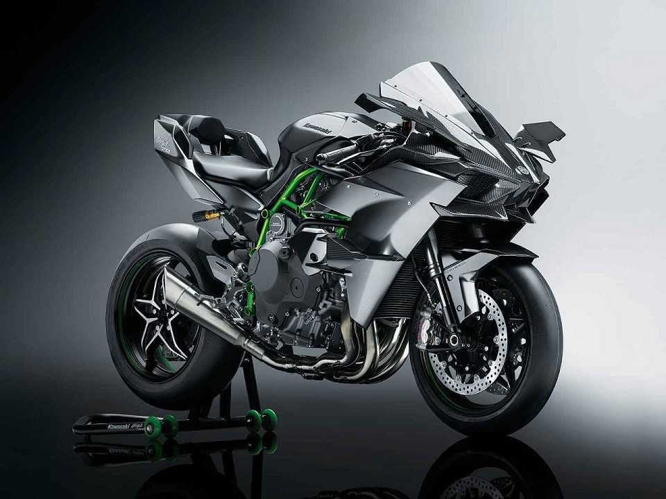
A Kawasaki Ninja H2R é uma motocicleta superesportiva produzida pela fabricante japonesa Kawasaki. Ela foi lançada em 2015 e é considerada uma das motos mais rápidas e potentes já produzidas.
O nome H2R faz referência ao motor de quatro cilindros sobrealimentado por um compressor mecânico, o que garante uma potência incrível de 310 cavalos a 14.000 rpm. Isso faz da Ninja H2R uma das motos mais potentes disponíveis no mercado atualmente.
Além do motor poderoso, a Ninja H2R é também conhecida por seu design agressivo e aerodinâmico, que garante estabilidade e alta velocidade. Ela possui um chassi tubular em aço, uma carenagem integral e diversas entradas de ar que otimizam a refrigeração do motor.
Outro destaque da Kawasaki Ninja H2R é a tecnologia presente nela. Ela conta com uma série de recursos avançados, como controle de tração, freios ABS, quick shifter e diversos modos de pilotagem que permitem ao piloto ajustar o desempenho da moto de acordo com as condições de uso.
No entanto, a Ninja H2R é uma moto exclusiva para uso em pistas de corrida e não é permitida para uso em estradas públicas. Ela é uma moto voltada para um público extremamente seleto, amantes de motocicletas de alta performance e com um poder aquisitivo elevado.
Em resumo, a Kawasaki Ninja H2R é uma motocicleta superesportiva que representa o que há de mais avançado em termos de tecnologia e desempenho no mundo das motocicletas. Com seu design agressivo, motor potente e tecnologia avançada, a Ninja H2R é uma moto única e exclusiva que conquista admiradores por todo o mundo.
Clique aqui para ver a disponibilidade de compra de uma Kawasaki Ninja H2R no Brasil!
Bmw S1000RR
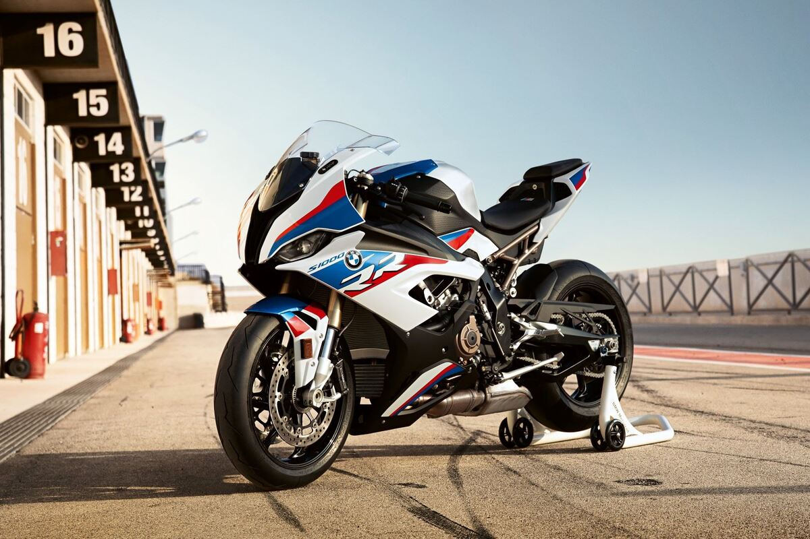
A BMW S1000RR é uma motocicleta superesportiva produzida pela montadora alemã BMW Motorrad. Lançada em 2009, ela rapidamente conquistou o mercado de motocicletas de alta performance, se tornando uma referência em termos de desempenho, tecnologia e design.
O motor da S1000RR é um quatro cilindros em linha de 999 cc, capaz de produzir uma potência máxima de 205 cavalos a 13.500 rpm, o que a torna uma das motos mais potentes da categoria. Além disso, ela é equipada com uma série de tecnologias avançadas, como controle de tração, quick shifter, freios ABS e diversos modos de pilotagem que permitem ao piloto ajustar o desempenho da moto de acordo com suas preferências e habilidades.
Outro destaque da BMW S1000RR é seu design agressivo e moderno, que combina linhas angulares e uma carenagem aerodinâmica. Além disso, ela conta com uma série de recursos de segurança, como faróis de LED, luzes de freio dinâmicas e uma luz de freio em LED integrada no para-brisa.
A S1000RR é também uma moto muito versátil, pois pode ser utilizada tanto para passeios em estradas quanto para corridas em pistas. Ela é uma moto muito estável em altas velocidades, graças a sua suspensão e chassi avançados.
Porém, a BMW S1000RR não é uma moto para iniciantes ou pilotos inexperientes. Ela requer habilidade e técnica para ser pilotada com segurança, devido ao seu alto desempenho e aceleração rápida.
Em resumo, a BMW S1000RR é uma motocicleta superesportiva que combina desempenho, tecnologia e design em um único pacote. Ela é uma moto poderosa e versátil, que conquistou fãs ao redor do mundo por sua capacidade de oferecer uma experiência de pilotagem única e emocionante.
Clique aqui para ver a disponibilidade de compra de uma Bmw S1000RR no Brasil!
Yamaha R1 M

A Yamaha R1 M é uma motocicleta superesportiva produzida pela fabricante japonesa Yamaha. Ela foi lançada em 2015 como uma edição especial da Yamaha R1, com um desempenho e tecnologia ainda mais avançados.
O motor da Yamaha R1 M é um quatro cilindros em linha de 998 cc, capaz de produzir uma potência máxima de 200 cavalos a 13.500 rpm. Ele é acoplado a uma transmissão de seis velocidades, com um sistema de embreagem deslizante que oferece mudanças de marcha suaves e precisas.
A R1 M é uma moto extremamente leve, com um peso de apenas 200 kg, o que a torna muito ágil e rápida nas curvas. Além disso, ela conta com uma série de recursos tecnológicos avançados, como controle de tração, quick shifter, freios ABS, sistema de suspensão eletrônica e diversos modos de pilotagem que permitem ao piloto ajustar o desempenho da moto de acordo com suas preferências e condições de uso.
Outro destaque da Yamaha R1 M é seu design aerodinâmico e agressivo, com linhas angulares e uma carenagem integral que minimiza o arrasto e aumenta a estabilidade em altas velocidades. Além disso, ela conta com uma série de recursos de segurança, como faróis de LED, luzes de freio dinâmicas e uma luz de freio em LED integrada no para-brisa.
A Yamaha R1 M é uma moto voltada para um público muito exigente, que busca um desempenho e tecnologia de ponta. Ela é uma moto de alto desempenho e requer habilidade e técnica para ser pilotada com segurança, devido ao seu alto poder de aceleração e velocidade máxima.
Em resumo, a Yamaha R1 M é uma motocicleta superesportiva que oferece um desempenho excepcional, tecnologia avançada e design agressivo. Ela é uma moto que conquista os pilotos mais experientes e exigentes, que buscam uma experiência de pilotagem única e emocionante.
Clique aqui para ver a disponibilidade de compra de uma Yamaha R1 M no Brasil!
Bmw R1200GS
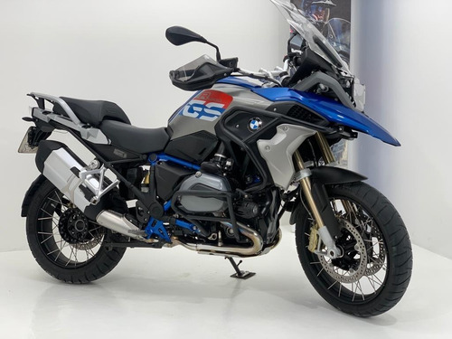
A BMW R1200GS é uma motocicleta de turismo de aventura produzida pela fabricante alemã BMW Motorrad. Desde o seu lançamento em 2004, ela se tornou uma das motos mais populares do mundo, graças à sua capacidade de combinar conforto, desempenho e versatilidade em um único pacote.
O motor da BMW R1200GS é um bicilíndrico boxer de 1.170 cc, capaz de produzir uma potência máxima de 125 cavalos a 7.750 rpm. Ele é acoplado a uma transmissão de seis velocidades, com um sistema de embreagem hidráulica que oferece mudanças de marcha suaves e precisas.
A R1200GS é uma moto projetada para longas viagens em estradas e trilhas off-road. Ela conta com uma suspensão ajustável, que permite ao piloto ajustar a altura da moto e a rigidez da suspensão de acordo com as condições da estrada. Além disso, ela possui um conjunto de características de segurança, como freios ABS, controle de tração e assistente de partida em subida.
Outro destaque da BMW R1200GS é seu design versátil e funcional, que inclui uma carenagem frontal que protege o piloto do vento e da chuva, um para-brisa ajustável e um assento confortável que permite ao piloto se sentir confortável por longos períodos de tempo. Ela também é equipada com um painel de instrumentos completo, que inclui indicadores de velocidade, rotação do motor, temperatura e nível de combustível.
A R1200GS é uma moto adequada tanto para pilotos experientes quanto para iniciantes. Ela é fácil de manusear e sua condução é bastante intuitiva, o que torna a pilotagem mais segura e agradável.
Em resumo, a BMW R1200GS é uma motocicleta de turismo de aventura que oferece um desempenho confiável e versátil, com um design confortável e funcional. Ela é uma moto que conquistou o mercado mundial, graças à sua capacidade de oferecer uma experiência de pilotagem única e emocionante, seja nas estradas ou nas trilhas.
Clique aqui para ver a disponibilidade de compra de uma Bmw R1200GS no Brasil!
Ducati Panigale V4 S
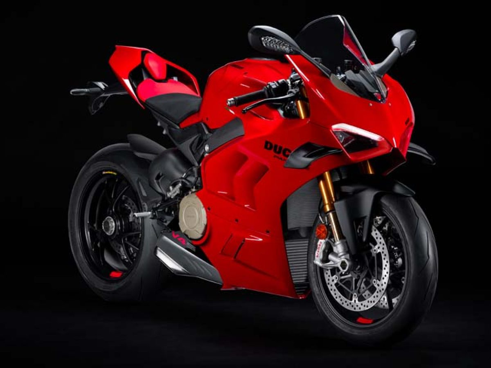
A Ducati Panigale V4 S é uma motocicleta esportiva produzida pela fabricante italiana Ducati. Seu design inovador, tecnologia avançada e alto desempenho a tornam uma das motos mais cobiçadas pelos amantes de velocidade em todo o mundo.
O motor da Panigale V4 S é um quatro cilindros em V de 1.103 cc, capaz de produzir uma potência máxima de 214 cavalos a 13.000 rpm. Ele é acoplado a uma transmissão de seis velocidades, com um sistema de embreagem deslizante que oferece mudanças de marcha suaves e precisas.
A Panigale V4 S possui um chassi em alumínio e suspensão ajustável, que permite ao piloto ajustar a altura da moto e a rigidez da suspensão de acordo com as condições da estrada. Ela também é equipada com um sistema de freios Brembo e controle de tração, que garantem uma pilotagem segura e confiável.
O design da Panigale V4 S é inspirado nas motos de corrida da Ducati. Ela possui uma carenagem aerodinâmica e agressiva, que melhora o fluxo de ar e a estabilidade em altas velocidades. Além disso, ela é equipada com um painel de instrumentos digital completo, que inclui indicadores de velocidade, rotação do motor, temperatura e nível de combustível.
Uma das principais inovações da Panigale V4 S é o seu sistema de suspensão ativa, que ajusta automaticamente a rigidez da suspensão de acordo com as condições da estrada. Esse sistema, conhecido como "Ducati Skyhook Suspension EVO", oferece um nível de conforto e controle sem precedentes, tornando a moto mais ágil e responsiva em curvas e mudanças de direção.
Em resumo, a Ducati Panigale V4 S é uma moto esportiva de alto desempenho, com um design inovador, tecnologia avançada e características de segurança que garantem uma pilotagem segura e emocionante. Ela é uma moto que combina a tradição da Ducati em produzir motos de corrida com as mais modernas tecnologias disponíveis no mercado.
Clique aqui para ver a disponibilidade de compra de uma Ducati Panigale V4 S no Brasil!
Vespa
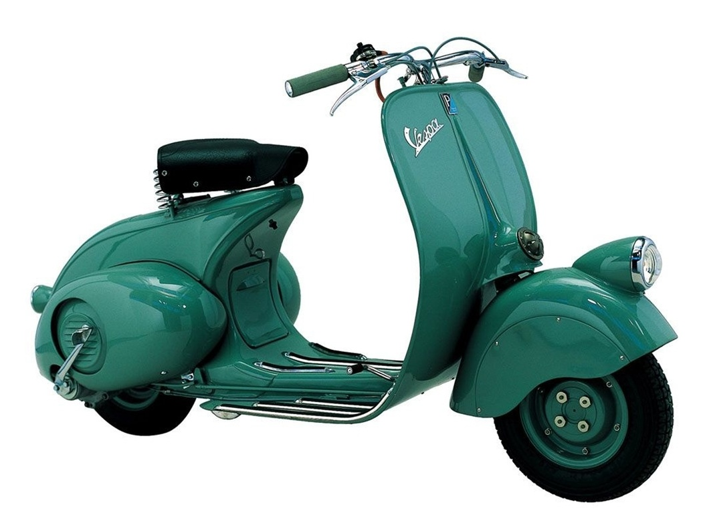
A Vespa é um icônico scooter italiano que surgiu em 1946, produzido pela empresa Piaggio. Com seu design elegante e inovador, a Vespa se tornou um símbolo da cultura italiana e um dos meios de transporte mais populares em todo o mundo.
Inicialmente concebida como uma solução para a falta de transporte na Itália do pós-guerra, a Vespa rapidamente se tornou uma sensação e um ícone cultural. Ela foi amplamente adotada pelos jovens, que se apaixonaram pelo seu estilo único e pela sensação de liberdade que ela proporcionava.
O design da Vespa é simples e elegante, com um chassi em aço e um assento baixo que permite que o piloto se sinta conectado à moto. Ela é movida por um motor de dois tempos, que oferece um bom desempenho e eficiência. Além disso, a Vespa é fácil de manobrar e estacionar, tornando-a uma escolha popular para viagens urbanas.
Ao longo dos anos, a Vespa evoluiu para incluir modelos mais potentes e sofisticados. Hoje, ela é considerada uma marca de luxo, com modelos que variam desde o estilo clássico até o mais moderno e tecnologicamente avançado.
Apesar das mudanças, a Vespa continua sendo um ícone de estilo e cultura, com muitos proprietários se orgulhando de sua moto como um objeto de moda e um símbolo de sua personalidade. Seja para viagens urbanas, viagens de fim de semana ou simplesmente para dar um passeio, a Vespa é uma moto que combina estilo, praticidade e diversão em um pacote elegante e icônico.
Clique aqui para ver a disponibilidade de compra de uma Vespa no Brasil!
Honda CBX 750 - 7 Galo
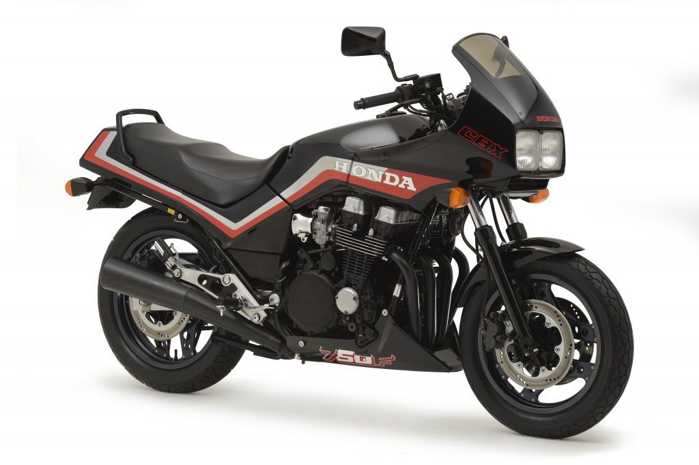
A Honda CBX 750 - 7 Galo é uma motocicleta clássica produzida pela fabricante japonesa Honda entre 1984 e 1994. A moto, que ficou conhecida como "7 Galo" devido ao formato do cabeçote do motor, é uma das mais icônicas da marca e ainda é admirada por muitos amantes de motocicletas.
O motor da CBX 750 - 7 Galo é um quatro cilindros em linha de 747 cc, que produz uma potência de 91 cavalos a 9.500 rpm. Ele é acoplado a uma transmissão de cinco velocidades, com um sistema de embreagem suave e preciso que oferece uma pilotagem confortável e segura.
A CBX 750 - 7 Galo possui um chassi em tubo de aço, que garante uma ótima rigidez e resistência. A moto também é equipada com suspensão ajustável e freios a disco nas duas rodas, oferecendo uma pilotagem estável e segura.
O design da CBX 750 - 7 Galo é elegante e atemporal, com uma carenagem em estilo esportivo que oferece uma proteção contra o vento. Ela também possui um painel de instrumentos completo, que inclui indicadores de velocidade, rotação do motor, temperatura e nível de combustível.
Uma das características mais notáveis da CBX 750 - 7 Galo é o seu som característico, produzido pelo motor de quatro cilindros em linha. Esse som, que muitos descrevem como "gritante", é um elemento chave da personalidade da moto.
Em resumo, a Honda CBX 750 - 7 Galo é uma motocicleta clássica que ainda é admirada por muitos entusiastas. Ela combina uma ótima performance, um design elegante e um som característico para oferecer uma experiência única de pilotagem. A "7 Galo" é um verdadeiro clássico que permanece relevante até os dias de hoje.
Clique aqui para ver a disponibilidade de compra de uma Honda CBX 750 no Brasil!
MV Agusta F4
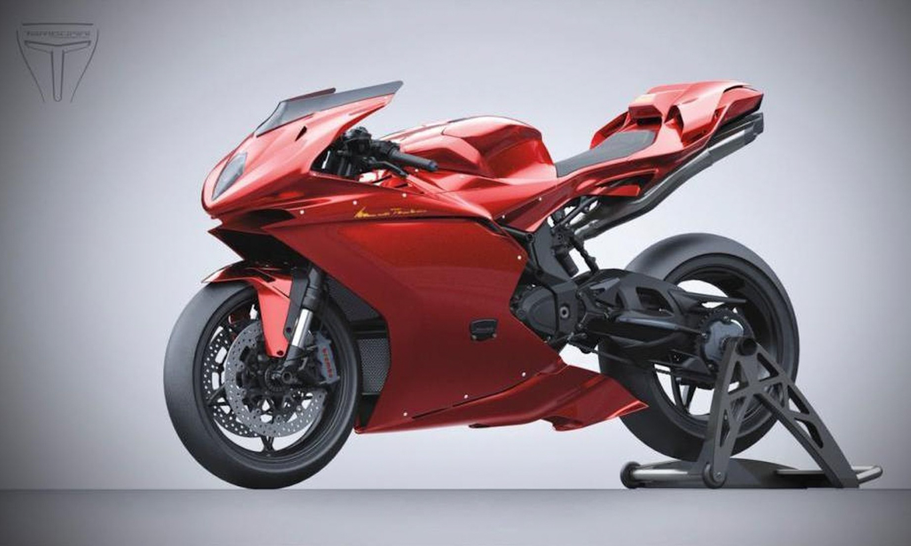
A MV Agusta F4 é uma motocicleta esportiva italiana de alto desempenho, produzida pela fabricante MV Agusta. Lançada em 1998, a F4 rapidamente se tornou uma referência em termos de design, engenharia e performance.
A F4 é equipada com um motor de quatro cilindros em linha de 998cc, que produz uma potência impressionante de até 195 cavalos a 13.400 rpm. O motor é acoplado a uma transmissão de seis velocidades, com um sistema de embreagem deslizante que oferece uma pilotagem suave e precisa.
O chassi da F4 é construído em treliça de aço, o que oferece uma ótima rigidez e controle em altas velocidades. A moto também é equipada com suspensão ajustável e freios a disco nas duas rodas, oferecendo uma pilotagem estável e segura em todas as condições.
O design da F4 é inspirado na arte e na cultura italiana, com uma carenagem elegante e aerodinâmica que oferece uma proteção contra o vento. O painel de instrumentos é completo, com indicadores digitais para velocidade, rotação do motor, temperatura, nível de combustível e muito mais.
Além do desempenho excepcional, a F4 também é conhecida por sua beleza estética e detalhes meticulosamente trabalhados. A moto foi projetada pelo lendário designer italiano Massimo Tamburini, que trabalhou em modelos icônicos como a Ducati 916 e a Cagiva Mito.
Em resumo, a MV Agusta F4 é uma motocicleta esportiva de alto desempenho que oferece uma combinação única de performance, design e engenharia. Ela é uma obra de arte sobre rodas, e continua sendo uma referência em termos de motocicletas esportivas italianas. Se você busca uma experiência de pilotagem inigualável, a F4 é uma excelente escolha.
Clique aqui para ver a disponibilidade de compra de uma MV Agusta F4 no Brasil!
Suzuki Hayabusa
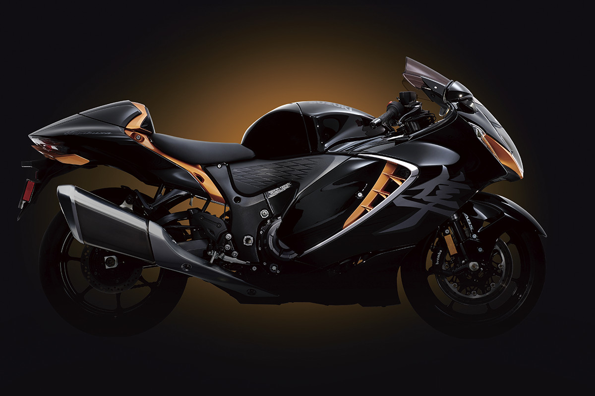
A Suzuki Hayabusa é uma motocicleta esportiva lendária que foi lançada em 1999 e rapidamente se tornou um ícone no mundo das duas rodas. Seu nome, Hayabusa, é uma referência ao falcão peregrino japonês, conhecido por sua velocidade e agilidade.
A Hayabusa é equipada com um motor de quatro cilindros em linha de 1340cc, que produz uma potência impressionante de 197 cavalos a 9.500 rpm e um torque de 155 Nm a 7.200 rpm. O motor é acoplado a uma transmissão de seis velocidades, com um sistema de embreagem deslizante que oferece uma pilotagem suave e precisa.
O chassi da Hayabusa é construído em alumínio, oferecendo uma excelente rigidez e estabilidade em altas velocidades. A moto também é equipada com suspensão ajustável e freios a disco nas duas rodas, oferecendo uma pilotagem estável e segura em todas as condições.
O design da Hayabusa é elegante e agressivo, com uma carenagem aerodinâmica que oferece uma ótima proteção contra o vento. O painel de instrumentos é completo, com indicadores digitais para velocidade, rotação do motor, temperatura, nível de combustível e muito mais.
Além do desempenho excepcional, a Hayabusa também é conhecida por suas habilidades em longas distâncias. Com seu assento confortável e posição de pilotagem relaxada, a moto é uma excelente escolha para passeios de longa distância.
Em resumo, a Suzuki Hayabusa é uma motocicleta esportiva lendária que oferece uma combinação única de desempenho, conforto e estabilidade. Se você busca uma experiência de pilotagem inigualável, a Hayabusa é uma excelente escolha. Ela é uma moto icônica que se mantém relevante e impressionante mesmo após mais de duas décadas de existência.
Clique aqui para ver a disponibilidade de compra de uma Suzuki Hayabusa no Brasil!